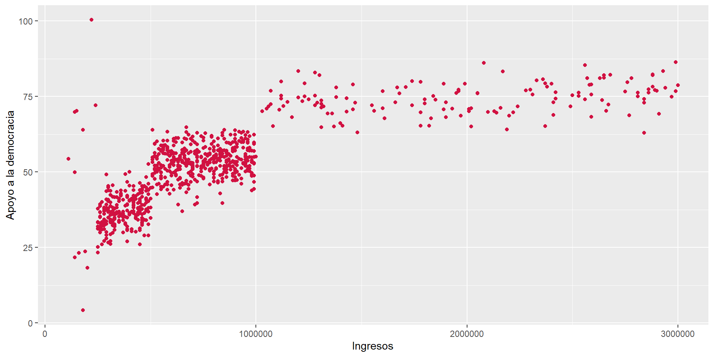

pacman::p_load(tidyverse, # Manipulacion datos
sjPlot, # Graficos y tablas
sjmisc, # Descriptivos
corrplot, # Correlaciones
psych, # Test estadísticos
kableExtra) # Tablas
options(scipen = 999) # para desactivar notacion cientifica
rm(list = ls()) # para limpiar el entorno de trabajo
load(url("https://github.com/cursos-metodos-facso/datos-ejemplos/raw/refs/heads/main/dataset4.RData")) #base de datos a utilizarAyudantía personalizada
Estadística Correlacional
Felipe Vega G.
14 de noviembre de 2025
Índice
Tipos de correlaciones.
Matrices de correlación y casos perdidos.
Chi cuadrado.
Tipos de correlaciones
- Correlación de Pearson: entre variables cuantitativas/numéricas.
- Correlación de Spearman y Tau de Kendall: entre variables ordinales.
- Correlación Punto Biserial: una variable dicotómica y otra cuantitativa/numérica.
¿Qué tenemos que tener en cuenta al analizar correlaciones?
Asociación lineal entre variables que indica sentido y fuerza de la asociación entre -1 a 1.
Dirección determinada por el signo del valor: positiva o negativa.
Intensidad de efecto usando Criterios de Cohen (1988, 1992): muy pequeño (menor a 0.1), pequeño (entre 0.1 a 0.3), moderado (entre 0.3 y 0.5), grande (mayor a 0.5).
Significancia estadística como mínimo 95% de confianza (p < 0.05).
Correlación de Pearson
Para la Punto Biserial se ocupa el mismo código pero las variables tienen una naturaleza distinta
Correlación de Spearman y Tau de Kendall
- Spearman
- Tau de Kendall
Ejemplo
- ¿Qué tipo de variables estamos utilizando?
- ¿Cómo se interpretan los resultados?
Pearson's product-moment correlation
data: dataset4$apoyo_dem and dataset4$ingresos
t = 37.907, df = 838, p-value < 0.00000000000000022
alternative hypothesis: true correlation is not equal to 0
95 percent confidence interval:
0.7684251 0.8184034
sample estimates:
cor
0.7947577 Ejemplo
¿Qué es una matriz de correlación?
Una matriz de correlación se conforma cuando se representa simultaneamente más de un par de asociaciones bivariadas.
¿Listwise o Pairwise?
Existen dos maneras de tratar los casos perdidos
Listwise: Las correlaciones bivariadas requieren eliminación de casos perdidos tipo listwise, es decir, si hay un dato perdido en una variable se pierde el caso completo. Siempre y cuando sea menos del 10% de los casos totales, sino se usa Pairwise.
Pairwise: En el caso de las matrices de correlaciones es posible tomar la opción pairwise para casos perdidos. Esto quiere decir que, se elimina los casos perdidos solo cuando afectan al calculo de un par espcifico.
Ejemplo
datos_matriz <- dataset4 %>%
dplyr::select(apoyo_dem, ingresos, ingresos_rec)
sum(is.na(datos_matriz))[1] 310 apoyo_dem ingresos ingresos_rec
10 150 150 Income (decil ingreso) tiene 150 NAs de 1000 casos, 15% de los casos, ¿Qué tratamiento de datos perdidos deberíamos utilizar?
Ejemplo
sjPlot::tab_corr(datos_matriz,
na.deletion = "pairwise", # espeficicamos tratamiento NA
triangle = "lower") | Apoyo a la democracia | Ingresos | Ingresos recodificado | |
| Apoyo a la democracia | |||
| Ingresos | 0.795*** | ||
| Ingresos recodificado | 0.892*** | 0.830*** | |
| Computed correlation used pearson-method with pairwise-deletion. | |||
Ejemplo
Si ocupamos listwise pasa lo siguiente…
sjPlot::tab_corr(datos_matriz,
na.deletion = "listwise", # espeficicamos tratamiento NA
triangle = "lower") | Apoyo a la democracia | Ingresos | Ingresos recodificado | |
| Apoyo a la democracia | |||
| Ingresos | 0.795*** | ||
| Ingresos recodificado | 0.892*** | 0.829*** | |
| Computed correlation used pearson-method with listwise-deletion. | |||
No hay cambios significativos, sin embargo, siempre hay que tener ojo !
Chi cuadrado
Chi cuadrado solo permite rechazar o no la hipótesis nula entre variables categóricas (dicotómicas, nominales o ordinales). No se puede saber la fuerza de la asociación por si sola.
Chi cuadrado
La siguiente figura se llama tabla de contingencia:
| Sexo | Ingresos recodificado |
Total | ||
|---|---|---|---|---|
| Bajos ingresos | Medios ingresos | Altos ingresos | ||
| Hombre | 269 34.5 % 100 % |
437 56.1 % 100 % |
73 9.4 % 50.7 % |
779 100 % 91.6 % |
| Mujer | 0 0 % 0 % |
0 0 % 0 % |
71 100 % 49.3 % |
71 100 % 8.4 % |
| Total | 269 31.6 % 100 % |
437 51.4 % 100 % |
144 16.9 % 100 % |
850 100 % 100 % |
| χ2=379.824 · df=2 · Cramer's V=0.668 · p=0.000 | ||||
Chi cuadrado
También se puede calcular con el siguiente código:
Pearson's Chi-squared test
data: dataset4$sexo and dataset4$ingresos_rec
X-squared = 379.82, df = 2, p-value < 0.00000000000000022Sin embargo, puede ser más fácil visualizarlo en la tabla anterior!
Coeficientes
- Coeficiente Phi: Para variables binarias (tablas de 2x2), Se interpreta igual que Pearson (−1 a 1) por sentido y fuerza.
- V de Cramer: Para variables que van más allá de 2x2. Se interpreta con \(Cohen\) para saber fuerza, va de 0 a 1.
Conclusión